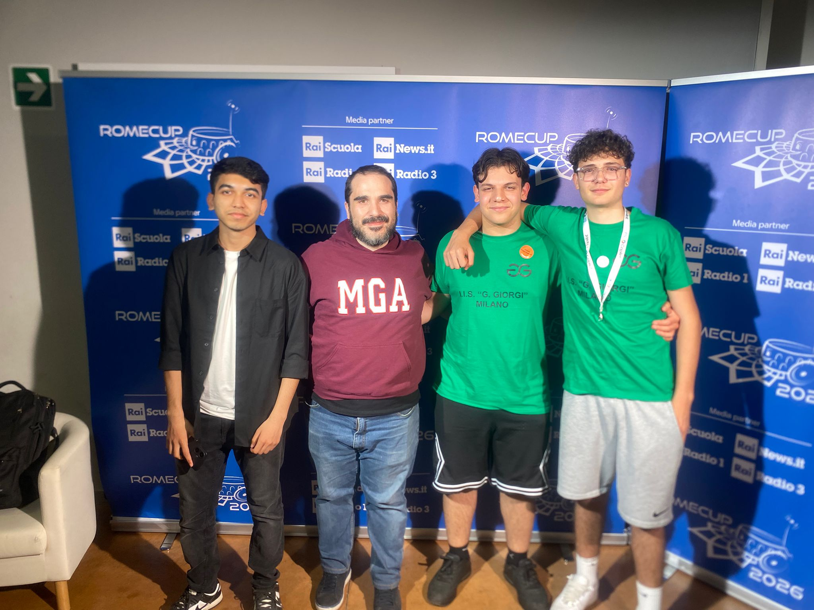
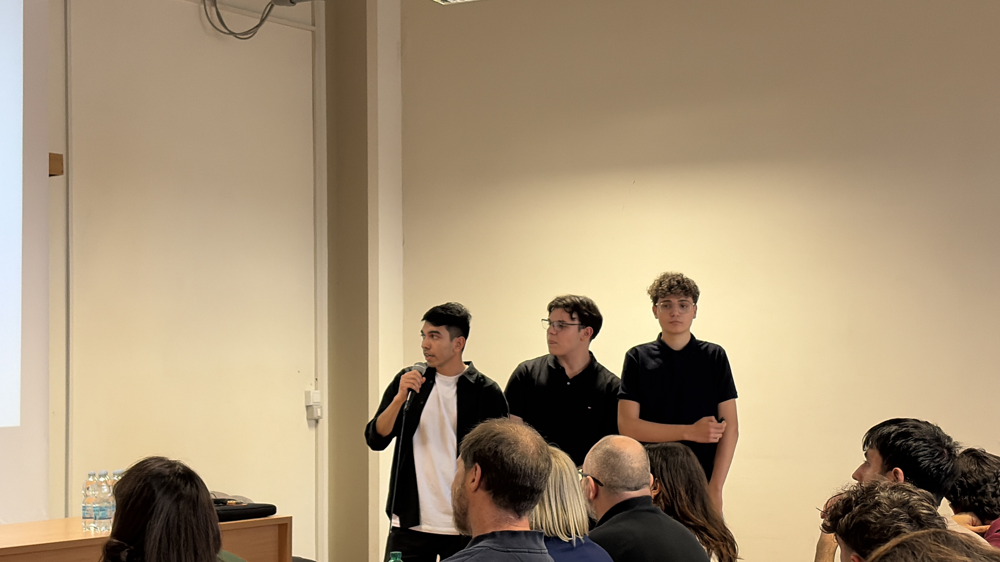

The Problem
Active citizenship shouldn't be this hard
Being an active citizen shouldn't be difficult. Yet, for many living in cities like Milan, reporting a broken streetlamp or hazardous waste in a park feels like an uphill battle. Websites are hidden, forms are overwhelming, and reports often disappear into a black hole without any updates.
This is why my team and I developed Voce Civica. Born from the Make It Real contest, it's a civic-tech platform designed to simplify communication between citizens and their local municipalities using cutting-edge AI.
"Voce Civica is not just an app — it is a digital bridge. We wanted to ensure that being an active citizen is no longer a privilege for the tech-savvy, but a right accessible to everyone."
The Journey
From Milan to the National Final
Our journey began with a simple observation: broken glass in the parks of Milan — a danger to children and pets. When we tried to report it, we realized even tech-savvy people like us found the official process overwhelming and non-inclusive.
We brought this problem to the Make It Real initiative, run by Fondazione Mondo Digitale and Amazon. After refining our prototype, we were invited to the Amazon Innovation Day in Novara, where Voce Civica was recognized as the best project among all teams from Lombardy and Piedmont.
The climax was RomeCup 2026 at Sapienza University of Rome, where Voce Civica was celebrated as a national winner for its social impact and technical feasibility.

Technical Architecture
Built to scale, designed to include
To ensure high performance and sustainability, we built Voce Civica on a modern, serverless stack designed for inclusivity and GDPR compliance from day one.

- Amazon OpenSearch — Vector-based clustering to automatically prevent duplicate reports from different citizens.
- Amazon Transcribe & Translate — Voice-to-text and multilingual support, making the app accessible to all residents regardless of language.
- AWS Sovereign Cloud — Ensures GDPR compliance and keeps citizen data within Italy's legal jurisdiction.
Social Impact
A safer, more livable city
For citizens, Voce Civica offers transparency and ease of use. For municipalities, it reduces administrative workload by automatically clustering similar reports and prioritizing urgent safety hazards.
What's Next
The road ahead
Launching within the Italian Public Administration requires a concrete, phased strategy. Our 5-phase roadmap is designed to move from prototype to national scale while meeting every regulatory requirement.